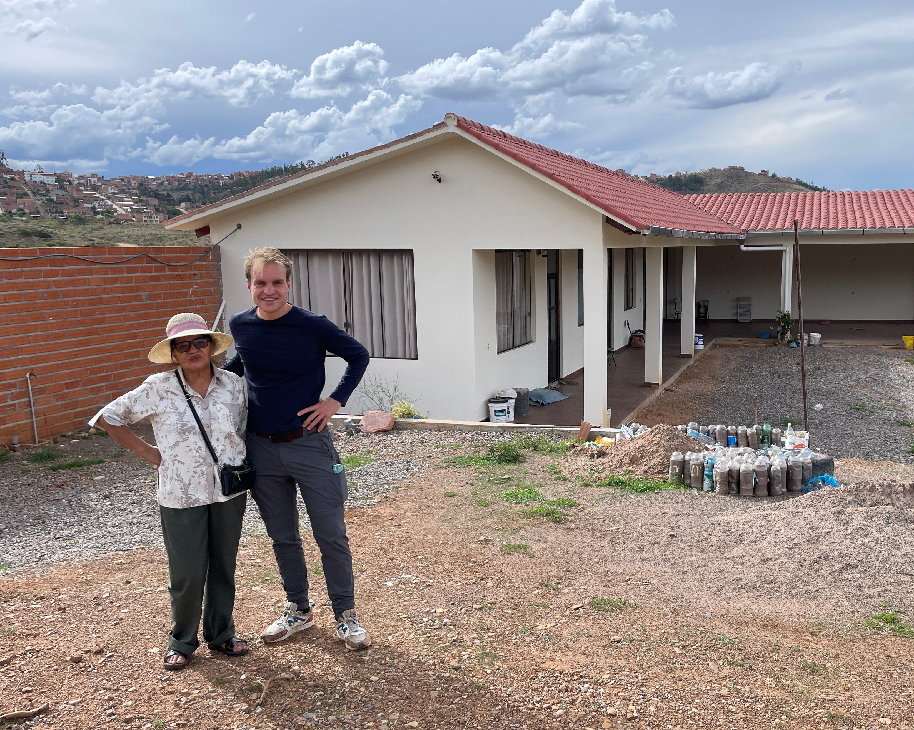

17 Reizen
door de tijd
De workaway maraton,
Salaar de Uyuni en
terug naar de bewoonde wereld.

We reizen door de tijd, vier maanden vooruit, van 1 december 2023 naar 1 april 2024. Niet omdat er niets gebeurde. Er gebeurde een heleboel, maar het ontbrak aan motivatie om in de pen te kruipen. Veel vrijwilligerswerk. En als je daarnaast ook een baan als programmeur onderhoudt, is dat weleens een uitdaging.
 Je zou kunnen denken: je zit in Peru, Bolivia en Paraguay, dat is toch fantastisch! En dat is het ook, maar ook verblijven in Zuid-Amerika gaat wennen. Steeds weer aanpassen aan een nieuwe omgeving blijft een uitdaging. "Waarom kom je dan niet gewoon terug naar huis?" Nouja, tegelijkertijd krijg ik ook nog heel veel energie van dit avontuur. En met de gedachte dat mijn spaargeld langzaam maar zeker groeit, geeft dat ook wat meer mogelijkheden voor de toekomst. Zo zal het voor een soldaat die een poos in het buitenland op oefening is geweest soms zwaar en eenzaam zijn geweest, maar hij zal ook trots zijn op de ervaring en niet ontevreden zijn over het gespaarde geld. Wanneer je dan alle manieren om te sparen naast elkaar legt, dan is deze manier van leven als digital nomad misschien wel nog niet zo’n verkeerde. Je moet alleen wel bereid zijn om op jonge leeftijd voor langere tijd ver van vrienden en familie te zijn, wat zeker niet altijd makkelijk is.
Je zou kunnen denken: je zit in Peru, Bolivia en Paraguay, dat is toch fantastisch! En dat is het ook, maar ook verblijven in Zuid-Amerika gaat wennen. Steeds weer aanpassen aan een nieuwe omgeving blijft een uitdaging. "Waarom kom je dan niet gewoon terug naar huis?" Nouja, tegelijkertijd krijg ik ook nog heel veel energie van dit avontuur. En met de gedachte dat mijn spaargeld langzaam maar zeker groeit, geeft dat ook wat meer mogelijkheden voor de toekomst. Zo zal het voor een soldaat die een poos in het buitenland op oefening is geweest soms zwaar en eenzaam zijn geweest, maar hij zal ook trots zijn op de ervaring en niet ontevreden zijn over het gespaarde geld. Wanneer je dan alle manieren om te sparen naast elkaar legt, dan is deze manier van leven als digital nomad misschien wel nog niet zo’n verkeerde. Je moet alleen wel bereid zijn om op jonge leeftijd voor langere tijd ver van vrienden en familie te zijn, wat zeker niet altijd makkelijk is.
 Dus waar starten we deze blog? December, toen ik na een maand workaway vrijwilligerswerk op Amazone herbebossingsproject Florestania, a la Expeditie Robinson, eindelijk uit de Boliviaanse jungle kwam en het vliegtuig nam van noord naar zuid Bolivia. Daar in Uyuni ontmoette ik Nederlandse vriend Koen uit Barcelona die ook aan het reizen was in Bolivia. Samen met een gids en 3 andere reizigers begonnen we aan een drie dagen durende jeeptocht door de woestijn langs de Argentijnse grens. De tocht door dit gebied, met onder andere zoutvlaktes zo wit als sneeuw, meren in verschillende kleuren met flamingo's, geisers, vulkanen, thermaalbaden, kloven, en vooral enorme uitgestrekte kilometers niemandsland, was waanzinnig mooi. Daarnaast was het natuurlijk ook erg gezellig om ouderwets met vriend Koen bij te kletsen, ditmaal aan de andere kant van de wereld.
Dus waar starten we deze blog? December, toen ik na een maand workaway vrijwilligerswerk op Amazone herbebossingsproject Florestania, a la Expeditie Robinson, eindelijk uit de Boliviaanse jungle kwam en het vliegtuig nam van noord naar zuid Bolivia. Daar in Uyuni ontmoette ik Nederlandse vriend Koen uit Barcelona die ook aan het reizen was in Bolivia. Samen met een gids en 3 andere reizigers begonnen we aan een drie dagen durende jeeptocht door de woestijn langs de Argentijnse grens. De tocht door dit gebied, met onder andere zoutvlaktes zo wit als sneeuw, meren in verschillende kleuren met flamingo's, geisers, vulkanen, thermaalbaden, kloven, en vooral enorme uitgestrekte kilometers niemandsland, was waanzinnig mooi. Daarnaast was het natuurlijk ook erg gezellig om ouderwets met vriend Koen bij te kletsen, ditmaal aan de andere kant van de wereld.
Vanuit de droge woestijn in Uyuni nam ik de nachtbus naar de pittoreske Boliviaanse stad Sucre. In plaats van via airbnb een kamer met alles voor mezelf te zoeken, zocht ik nu bewust voor een kamer in een gedeeld huis, waardoor ik belandde bij het vriendelijke gepensioneerde echtpaar Zene en Pura. Perfect om soms een praatje te kunnen maken en tegelijkertijd ook lekker je eigen ding te kunnen doen. Ik was verbaasd over het aantal kerken en hoe gelovig de mensen hier zijn. Begin december was het hele huis al in kerststijl aangekleed inclusief een kerstboom en een stalletje. Ik werd door hen uitgenodigd om hun tweede huis buiten Sucre te bezoeken. Is dat niet het mooie van reizen dat je van het ene op het andere moment met onbekende mensen een onbekende plek mag bezoeken? Bij aanvang van de feestdagen nam ik afscheid van dit warme gezin, en verkaste ik naar hostel Kultur Berlin aan de overkant van de straat om tijdens deze bijzondere dagen toch een beetje onder de reizigers te kunnen zijn. Het was gezellig, maar soms ook lastig om aansluiting te vinden bij de backpackers. Bovendien waren de mensen die ik met kerst ontmoette, zodra de kerst erop zat weer met de noorderzon vertrokken, zodat ik met oud en nieuw weer op zoek kon naar nieuwe contacten. Dus niet helemaal zoals ik kerst had beleefd in 2015 in Hanoi, Vietnam, toen ik met Bavelse (NL) vrienden Wout en Merijn misschien wel de meest memorabele feestdagen ooit had gevierd. Tijdens een ‘free walking tour’ kwam ik nog een Bavelse dame tegen: Rosalie Raas, van wie ik de zus kende. Dan is de wereld weer even erg klein.
 De eerste dagen van 2024 reisde ik via Sucre in het zuiden van Bolivia naar het buitengebied van Cochabamba in het midden van Bolivia waar mijn tweede Workaway van start ging. Dit was een project dat nog in de kinderschoenen stond, opgezet door de van oorsprong Aziatische vrouw Susana, die helemaal in haar uppie midden in de natuur aan een rivier huisjes had laten bouwen wat ooit een wellness verblijf moest worden. Maar ze was zo druk met de thuiswerkbaan als vertaalster dat ze nauwelijks tijd had voor het project zelf. Als je dan ook niet helemaal de drive hebt die de eigenaren van de vorige workaway hadden, en je alleen de kar moet trekken, dan schiet zo’n project natuurlijk niet zo erg op. Ik mocht met een schoffel wat aanrommelen in de tuin, en daarna kreeg ik een stapel pallets om er een hondenhok van te maken. De Workaway was halverwege en Veronica, de vrolijke dame die ik al in mijn eerste week in Peru had mogen ontmoeten, belde dat haar vakantie naar Ecuador was geannuleerd vanwege een ontsnapte drugsbaron. Ze kwam mij voor de derde keer opzoeken en dat was opnieuw onwijs gezellig. Ik kan bijna niet uitleggen hoe fijn het is dat zij ook digitaal werkt en dat samenzijn zo goed als vanzelf gaat zonder dat je bijvoorbeeld hoeft te zeggen ‘Maar ik moet zo wel nog een uurtje werken’. ‘Zou je het erg vinden als ik voetbalclub NAC aanzet?’, vraag ik haar. ‘Nee hoor, zet maar aan! Als jij het leuk vindt, dan vind ik het ook leuk.’ Dat het zo goed klikt is natuurlijk fantastisch maar maakt het ook lastig. mede omdat als het wat serieuzer wordt ook de vraag naar boven komt of je elkaar dan steeds wil gaan opzoeken, wat natuurlijk ook gevolgen heeft voor je reis.
De eerste dagen van 2024 reisde ik via Sucre in het zuiden van Bolivia naar het buitengebied van Cochabamba in het midden van Bolivia waar mijn tweede Workaway van start ging. Dit was een project dat nog in de kinderschoenen stond, opgezet door de van oorsprong Aziatische vrouw Susana, die helemaal in haar uppie midden in de natuur aan een rivier huisjes had laten bouwen wat ooit een wellness verblijf moest worden. Maar ze was zo druk met de thuiswerkbaan als vertaalster dat ze nauwelijks tijd had voor het project zelf. Als je dan ook niet helemaal de drive hebt die de eigenaren van de vorige workaway hadden, en je alleen de kar moet trekken, dan schiet zo’n project natuurlijk niet zo erg op. Ik mocht met een schoffel wat aanrommelen in de tuin, en daarna kreeg ik een stapel pallets om er een hondenhok van te maken. De Workaway was halverwege en Veronica, de vrolijke dame die ik al in mijn eerste week in Peru had mogen ontmoeten, belde dat haar vakantie naar Ecuador was geannuleerd vanwege een ontsnapte drugsbaron. Ze kwam mij voor de derde keer opzoeken en dat was opnieuw onwijs gezellig. Ik kan bijna niet uitleggen hoe fijn het is dat zij ook digitaal werkt en dat samenzijn zo goed als vanzelf gaat zonder dat je bijvoorbeeld hoeft te zeggen ‘Maar ik moet zo wel nog een uurtje werken’. ‘Zou je het erg vinden als ik voetbalclub NAC aanzet?’, vraag ik haar. ‘Nee hoor, zet maar aan! Als jij het leuk vindt, dan vind ik het ook leuk.’ Dat het zo goed klikt is natuurlijk fantastisch maar maakt het ook lastig. mede omdat als het wat serieuzer wordt ook de vraag naar boven komt of je elkaar dan steeds wil gaan opzoeken, wat natuurlijk ook gevolgen heeft voor je reis.
 Naarmate de dagen vorderden werd ik steeds meer ongemakkelijk van het wat cynische lachje van de eigenaresse van de workaway, al weet ik zeker dat ze geen slechte bedoeling had. Dynamiek is een vreemd iets. Soms heb je een klik met persoon A en ook met B maar wanneer we met zijn drieën zijn dan is die klik plotseling verdwenen. Een workaway is niet alleen samen ‘werken’ maar ook samen ‘wonen’. Je leert elkaar echt kennen en in de loop van de dagen stapelen de kleinste irritaties zich natuurlijk op. Dus vertrok ik iets eerder dan gepland had van deze workaway die ik inruilde voor alweer mijn derde workaway in het derde Zuid-Amerikaanse land, namelijk Paraguay. Onderweg hiernaar toe moest ik, en met mij tientallen andere automobilisten, vanwege overheidsprotesten, stenen van de weg te tillen om verder te kunnen rijden en uiteindelijk zelfs het vliegtuig nemen omdat er zoveel stenen lagen dat de enige weg richting Paraguay onbegaanbaar was.
Naarmate de dagen vorderden werd ik steeds meer ongemakkelijk van het wat cynische lachje van de eigenaresse van de workaway, al weet ik zeker dat ze geen slechte bedoeling had. Dynamiek is een vreemd iets. Soms heb je een klik met persoon A en ook met B maar wanneer we met zijn drieën zijn dan is die klik plotseling verdwenen. Een workaway is niet alleen samen ‘werken’ maar ook samen ‘wonen’. Je leert elkaar echt kennen en in de loop van de dagen stapelen de kleinste irritaties zich natuurlijk op. Dus vertrok ik iets eerder dan gepland had van deze workaway die ik inruilde voor alweer mijn derde workaway in het derde Zuid-Amerikaanse land, namelijk Paraguay. Onderweg hiernaar toe moest ik, en met mij tientallen andere automobilisten, vanwege overheidsprotesten, stenen van de weg te tillen om verder te kunnen rijden en uiteindelijk zelfs het vliegtuig nemen omdat er zoveel stenen lagen dat de enige weg richting Paraguay onbegaanbaar was.
 Na 3 dagen reizen kwam ik dus eindelijk aan in wat ze in Paraguay de Chaco noemen. Wat ooit kilometers aan tropisch regenwoud was, is inmiddels gekapt en kurkdroog grasland. Enorme percelen graslanden met boerderijen, ieder zo groot als Bavel. Het is hier zo ongekend heet (40+) en droog, dat als je hier je was ophangt, het na 10 minuten alweer kan opvouwen. De boerderij, die ook een hotel was, heette Iparoma en lag in het Paraguayaanse plaatsje Filadelfia. ‘Eet je ook vlees?’ was het eerste wat ze op de boerderij met 250 koeien aan mij vroegen. Het was een fijne workaway, al snel voelde ik me er thuis. Na de lunch, wanneer iedereen siësta hield, zette ik een kopje koffie en ging ik in de kantine aan de slag met programmeren. Dan was voor even heel het hotel in stilte en kon ik mij even goed concentreren op het werk. De vriendelijke en geduldige werknemer Julio, gaf heldere instructies aan de vrijwilligers en leerde mij hoe ik een muurtje van cement kon metselen, een kapotte autoband kon vervangen, hoe ik bloem kon maken van graan en hoe je met een lasso een schaap kon vangen en slachten. Zodra we met het zwarte karretje aankwamen wisten de schapen al hoe laat het was. Julio leerde mij bovendien grappige weetjes zoals dat de ‘club olympia’ koe, die hier ook wordt gehouden, de wit zwarte koe is uit Nederland, of dat een herdershond, in de eerste week van zijn leven melk van het schaap moet drinken om een succesvolle herdershond te worden.
Na 3 dagen reizen kwam ik dus eindelijk aan in wat ze in Paraguay de Chaco noemen. Wat ooit kilometers aan tropisch regenwoud was, is inmiddels gekapt en kurkdroog grasland. Enorme percelen graslanden met boerderijen, ieder zo groot als Bavel. Het is hier zo ongekend heet (40+) en droog, dat als je hier je was ophangt, het na 10 minuten alweer kan opvouwen. De boerderij, die ook een hotel was, heette Iparoma en lag in het Paraguayaanse plaatsje Filadelfia. ‘Eet je ook vlees?’ was het eerste wat ze op de boerderij met 250 koeien aan mij vroegen. Het was een fijne workaway, al snel voelde ik me er thuis. Na de lunch, wanneer iedereen siësta hield, zette ik een kopje koffie en ging ik in de kantine aan de slag met programmeren. Dan was voor even heel het hotel in stilte en kon ik mij even goed concentreren op het werk. De vriendelijke en geduldige werknemer Julio, gaf heldere instructies aan de vrijwilligers en leerde mij hoe ik een muurtje van cement kon metselen, een kapotte autoband kon vervangen, hoe ik bloem kon maken van graan en hoe je met een lasso een schaap kon vangen en slachten. Zodra we met het zwarte karretje aankwamen wisten de schapen al hoe laat het was. Julio leerde mij bovendien grappige weetjes zoals dat de ‘club olympia’ koe, die hier ook wordt gehouden, de wit zwarte koe is uit Nederland, of dat een herdershond, in de eerste week van zijn leven melk van het schaap moet drinken om een succesvolle herdershond te worden.
De standaard reis die veel toeristen in Zuid-Amerika maken is van Colombia (noord) naar Argentinië (zuid). Paraguay wordt daarbij vaak overgeslagen waardoor je een veel diverser type reiziger treft. Neem alleen al de vrijwilligers op deze workaway. De Canadees Robin die hier met een eigen busje helemaal vanaf Canada heen is gereden, of de 48 jarige Duitse timmerman Andreas over wie je een boek kan schrijven. Hij zegt dat hij helemaal niet van reizen houdt en niet zo goed weet waarom hij hier is. Dat reizen vandaag de dag met mobieltjes niet meer is wat het was in de jaren 90, toen mensen nog tijd voor je namen. Daar valt natuurlijk wel iets voor te zeggen. Toen zijn relatie uitging en hij zich besefte dat hij niet veel spullen nodig had, besloot hij een maand in een grot te gaan wonen, tot de eenzaamheid hem opbrak. Het was een goede gast en we gingen regelmatig samen zodra de schemering indaalde op zoek naar wilde dieren. Schorpioenen, struisvogels, gordeldieren, stinkdieren, de biodiversiteit was absurd hoog. Een klein rondje om het erf en het wemelde er van de vogels. Wulpen Uilen, Spechten, Haviken, Waterrallen, Gieren. Vogels waar je in Nederland een dag voor op excursie zou gaan, zag je zo vaak dat het bijna ging wennen. Twee toeristen, een vader en zoon bezochten verblijf Iparoma en als hulpje mocht ik met hen en de eigenaresse Marylin vier dagen op safari. Navigatie was niet nodig, want Paraguay is in feite een lange weg met een hoop zijwegen, onmogelijk om er te verdwalen. Onderweg komen we verschillende natuurreservaten tegen die wildcamera's gebruiken om dieren te herkennen. Ik kan het natuurlijk niet laten om ze te vertellen dat ze met onze website BOX21, de dieren ook automatisch kunnen herkennen. We hoopten natuurlijk op het waarnemen van een jaguar, de top predator van Zuid-Amerika. Dat lukte helaas niet, maar we zagen wel een Tapir, een fors zwijn met opvallend lange neus.
 De dieren werden niet alleen gespot, sommige belanden even later ook op ons bord. Zo leek het een beetje het wilde westen. Voor het eerst in een paar weken regende het, en dat bracht zo veel rupsen met zich mee dat je buiten geen stap kon zetten zonder er op een te staan. 's Ochtends molken we de koeien, gaven we de kippen te eten en gingen we het zwembad stofzuigen. Het zwaar fysiek werk was wel weer even wennen, maar gelukkig werden we vaak beloond met asado (vlees van de bbq) en tereree (theekruiden in ijskoud water). Er ging dan een beker met een rietje rond waar om beurten van gedronken werd. In Paraguay praten de lokale mensen niet alleen Spaans maar vooral veel de inheemse taal Guarani. De mensen zijn echt zo vriendelijk en geduldig. De eigenaren van de Iparoma boerderij maakten deel uit van de mennonieten gemeenschap, Duitse migranten die sinds 1930 in Paraguay zijn komen wonen, tot ontsteltenis van de inheemse bevolking zoals de Ayoreos. Op veel plekken wordt dus Duits gesproken en wanneer ik boodschappen deed, zag ik overal mensen met blonde haren net als ik, die hier leven er alsof het de normaalste zaak ter wereld is. In mennonietendorp Neu-Halbstad woont zelfs een kolonie Duitsers die na de tweede wereldoorlog naar Paraguay zijn gekomen. Stel je voor dat je zo’n oorlog gevoerd hebt en dan je leven hier voortzet.
De dieren werden niet alleen gespot, sommige belanden even later ook op ons bord. Zo leek het een beetje het wilde westen. Voor het eerst in een paar weken regende het, en dat bracht zo veel rupsen met zich mee dat je buiten geen stap kon zetten zonder er op een te staan. 's Ochtends molken we de koeien, gaven we de kippen te eten en gingen we het zwembad stofzuigen. Het zwaar fysiek werk was wel weer even wennen, maar gelukkig werden we vaak beloond met asado (vlees van de bbq) en tereree (theekruiden in ijskoud water). Er ging dan een beker met een rietje rond waar om beurten van gedronken werd. In Paraguay praten de lokale mensen niet alleen Spaans maar vooral veel de inheemse taal Guarani. De mensen zijn echt zo vriendelijk en geduldig. De eigenaren van de Iparoma boerderij maakten deel uit van de mennonieten gemeenschap, Duitse migranten die sinds 1930 in Paraguay zijn komen wonen, tot ontsteltenis van de inheemse bevolking zoals de Ayoreos. Op veel plekken wordt dus Duits gesproken en wanneer ik boodschappen deed, zag ik overal mensen met blonde haren net als ik, die hier leven er alsof het de normaalste zaak ter wereld is. In mennonietendorp Neu-Halbstad woont zelfs een kolonie Duitsers die na de tweede wereldoorlog naar Paraguay zijn gekomen. Stel je voor dat je zo’n oorlog gevoerd hebt en dan je leven hier voortzet.
Ze zijn voorbij gevlogen, reizen door de tijd. 5 maanden workaway op de meest afgelegen plekken van Zuid-Amerika. Het was opnieuw gekkenwerk. Leven als digital nomad in de Boliviaanse jungle, en de gortdroge Paraguayaanse Chaco. Ik ben erg dankbaar voor de bijzondere mensen die ik heb mogen ontmoeten en de ervaringen die mij zullen bijblijven. En blij dat deze periode geholpen heeft om een stap te zetten richting een wat zekerder bestaan. Het is hoog tijd om terug te keren naar de beschaving en mezelf te trakteren op een kleine beloning, waarvoor ik afreis naar Asunción, de hoofdstad van Paraguay. Daarover dus ongetwijfeld meer in de volgende blog!